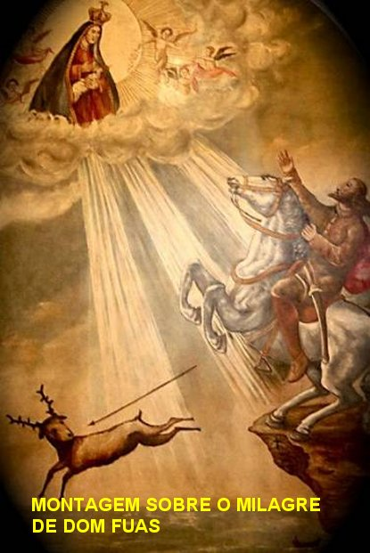
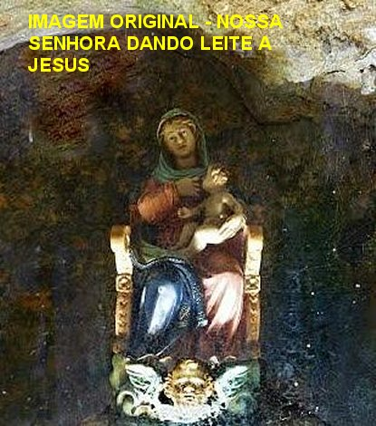
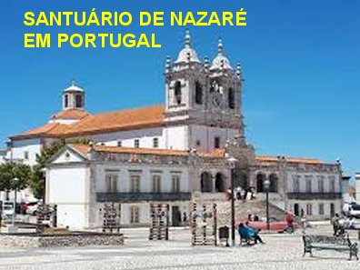
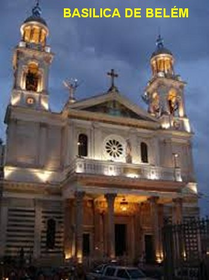

“NOSSA SENHORA DE NAZARÉ”
A História de NOSSA SENHORA DE NAZARÉ, provem de longa data, desde o tempo em que a Sagrada Família vivia em Nazaré. Depois, em face de fatos ocorridos no século V, a imagem seguiu para a Espanha. Lá permaneceu até o ano 711, quando em consequência da invasão da Espanha pelos hereges muçulmanos, a imagem foi levada para Portugal.
Aqui no Brasil, uma bela imagem de NOSSA SENHORA DE NAZARÉ chegou há cerca de duzentos anos trazida pelos Padres Jesuítas portugueses, que se radicaram particularmente na cidade de Belém, Capital do Estado do Pará, onde a devoção a VIRGEM DE NAZARÉ, cresceu e se enraizou, dando origem a uma linda e admirável manifestação religiosa, denominada “Círio de Nazaré”, tornando-se uma das maiores, se não a maior das procissões católicas do mundo, anualmente reunindo milhões de fieis, numa bonita e comovente manifestação de amor e carinho a MÃE DE DEUS.
NOSSA SENHORA DE NAZARÉ é a Padroeira do Estado do Pará e a bondosa Rainha da Amazônia, muito embora existam muitos Templos Religiosos dedicados a ela, em quase todos Estados da Federação Brasileira.
LENDA

O Cavaleiro Dom Fuas entendeu todo o perigo. Compreendeu que verdadeiramente tinha ocorrido um grande milagre da SANTA MÃE DE DEUS. Desmontou e desceu até a gruta por um caminho lateral existente, para rezar e agradecer a NOSSA SENHORA o milagre que preservou a sua vida.
Na continuidade dos dias “ele idealizou um agradecimento”. Chamou os pedreiros e ordenou a construção de uma Capela na falésia, em cima da gruta, exatamente no local da ocorrência, a fim de ali permanecer a memória daquele prodigioso milagre. A Capela recebeu o nome de “Ermida da Memória” e então, ele mandou trazer a imagem de NOSSA SENHORA que estava na Gruta lá embaixo, a fim DELA ser venerada na nova Capela em cima. E desse modo, na “Ermida da Memória”, que ele construiu, permanece a imagem de NOSSA SENHORA DE NAZARÉ exposta à visitação e veneração dos fiéis para sempre.
HISTÓRIA
Depois que a nova Capela ficou pronta, aconteceu um fato interessante. Quando o Alcaide Dom Fuas ordenou que a imagem viesse para a nova Capela, os auxiliares desceram até a gruta embaixo, a fim de a transportarem com os demais objetos que existiam, para a “Ermida da Memória” (a nova Capela). E então, as pessoas que desceram a gruta, encontraram um Cofre de Marfim contendo relíquias interessantes: havia dentro as imagens de São Brás e de São Bartolomeu e também um pergaminho, onde se relatava a história da pequena imagem feita em madeira, colorida, representando a SANTÍSSIMA VIRGEM MARIA sentada num pequeno banco, amamentando o MENINO JESUS.
Segundo os
dizeres do pergaminho, aquela imagem de NOSSA SENHORA teria sido venerada desde
os primeiros tempos do Cristianismo, em Nazaré, na 
Então foi esta a mesma imagem que se encontrava no Mosteiro na Espanha e que foi trazida para a gruta em Portugal, no ano 711. Assim sendo, essa imagem, sem dúvida, poderá ser a mais antiga venerada pelos cristãos.
Até hoje, a tradição aponta aos visitantes da Capela “Ermida da Memória” a marca deixada pela ferradura das patas do cavalo de Don Fuas, na falésia, no extremo do “Bico do Milagre”, ao lado da referida Capela, no “Sítio de Nazaré”.
No Mosteiro de Cauliniana, na Espanha, a imagem permaneceu até 711, ano da batalha de Guadalete, quando as poderosas forças muçulmanas invadiram a Espanha, destruíram a resistência cristã e ocuparam o país. Os cristãos espanhóis foram forçados a fugirem desordenadamente para o norte. Entretanto, Dom Rodrigo, Rei Cristão derrotado pelas forças muçulmanas, conseguiu escapar do campo de batalha e depois, com muita habilidade, disfarçado em mendigo refugiou-se incógnito em Cauliniana. Porém, certo dia ao confessar-se com Frei Romano, um dos Monges, teve de lhe dizer a verdade, narrando quem ele era e porque fugia. Diante do terrível fato, o Monge propôs-lhe então, fugirem juntos para o litoral atlântico, e levaram consigo a antiga imagem de NOSSA SENHORA DE NAZARÉ, que se venerava no Mosteiro, a qual tinha adquirido fama de milagrosa. Por sua vez, os demais Monges sabendo da invasão muçulmana, decidiram não permanecer em Cauliniana, também se prepararam e fugiram para outras regiões, deixando o Mosteiro vazio e bem trancado.
Dom Rodrigo e Frei Romano chegaram ao destino no dia 22 de Novembro de 711, e se instalaram no Monte Seano, em Portugal, hoje denominado Monte de São Bartolomeu, numa Igreja abandonada. Hoje, conjectura-se, que a intenção deles de permanecer inicialmente naquela região, é o fato de existir nas imediações um Mosteiro e a Igreja de São Gião. Mas os dois permaneceram pouco tempo juntos. O Rei ficou naquele mesmo local, mas o Monge levando consigo a imagem de NOSSA SENHORA DE NAZARÉ, instalou-se a três quilômetros do Monte São Bartolomeu, numa pequena gruta embaixo de uma falésia sobre o mar. (A mesma Gruta onde anos posteriores aconteceu o Milagre)
Passado um ano, o Rei Rodrigo decidiu abandonar a região e imagina-se que se tenha deslocado até Lisboa. Frei Romano continuou vivendo naquela gruta, um pequeno eremitério subterrâneo até a sua morte. Assim, a sagrada imagem de NOSSA SENHORA DE NAZARÉ continuou sobre o pequeno altar que ele fez no interior da gruta (do eremitério) onde ele, o Monge, a tinha colocado. Longe de todos, com raríssimos visitantes, ali permaneceu até 1182, quando aconteceu o milagre com Dom Fuas e então, ela foi levada para a Capela “Ermida da Memória”, que Dom Fuas mandou construir sobre a Gruta, no “Sítio de Nazaré”. Significa dizer, que esta pequenina imagem permaneceu naquele mesmo “Sítio de Nazaré”, desde ano 711-712 até o ano 1182, ou seja, durante 470 a 471 anos.
Em 1377, o Rei Dom Fernando de Portugal (1367-1383), devido à significativa afluência de peregrinos, mandou construir perto da Capela feita por Dom Fuas, uma Igreja maior para a qual foi transferida a imagem de NOSSA SENHORA DE NAZARÉ.
O título da invocação de NOSSA SENHORA DE NAZARÉ deu o nome à Vila da Nazaré, onde hoje a imagem é venerada no belo SANTUÁRIO DE NOSSA SENHORA DE NAZARÉ, construído especialmente para acolher a Santa Imagem e aonde os milhares de devotos vêm visitá-la. Esta devoção foi conhecida e divulgada em todo o Império Português, sobretudo devido à ação evangelizadora dos Jesuítas que consagraram a NOSSA SENHORA DE NAZARÉ a sua principal Casa de Noviciado em Lisboa, ainda quando era a capital do Império Português.
ÉPOCA DA COLONIZAÇÃO
A popularidade da devoção a NOSSA SENHORA DE NAZARÉ desde a época dos Descobrimentos já era tão significativa, que Vasco da Gama, antes e depois da sua primeira viagem à Índia, e também Pedro Álvares Cabral, vieram em peregrinação ao Sítio de Nazaré. Entre outras importantes autoridades e pessoas da realeza que visitaram e rezaram diante da imagem, estão: a Rainha D. Leonor da Áustria, terceira mulher do Rei Dom Manuel I; também a Irmã do Imperador Carlos V, futura Rainha da França, veio visitar a imagem e permaneceu no Sítio de Nazaré alguns dias, no ano 1519, num alojamento de madeira construído especialmente para esta ocasião. O famoso Padre Jesuíta São Francisco Xavier, denominado o Apóstolo do Oriente, veio especialmente em peregrinação à Nazaré antes de partir para Goa. Aliás, foram os Jesuítas portugueses os grandes propagadores deste culto em todos os continentes.
APÓS OS DESCOBRIMENTOS

No século dezesseis, o SANTUÁRIO DE NOSSA SENHORA DE NAZARÉ fundado por Dom Fernando, começou a ser reconstruído e aumentado, tendo as obras se prolongado até o final do século dezenove. O edifício atual é moderno e com um bonito e funcional caráter peculiar.
A sagrada imagem colorida, com pouco mais de um palmo de altura, representa NOSSA SENHORA DE NAZARÉ sentada num banco amamentando o MENINO JESUS sentado na sua perna esquerda. Está exposta na capela-mor num nicho iluminado integrado no retábulo barroco, ao qual os devotos podem aceder subindo uns poucos degraus de escada que parte da sacristia.
NA ATUALIDADE
È importante destacar
que a imagem de NOSSA SENHORA DE NAZARÉ que se venera em Belém, capital do
Estado do Pará, é uma imagem milagrosa, cuja festa anual recebeu o 
Compreende-se assim, que a devoção a NOSSA SENHORA DE NAZARÉ é de origem portuguesa. Ela veio para o Brasil, introduzida no Pará pelos jesuítas portugueses, há mais de 200 anos, com uma participação admirável do povo brasileiro. Com o aumento da devoção, foi construída uma linda Basílica dedicada a NOSSA SENHORA DE NAZARÉ em Belém, no Pará. Em todos os anos, no dia 2 de Outubro, acontecem as grandes manifestações do “CÍRIO DE NOSSA SENHORA DE NAZARÉ”, reunindo multidões de pessoas de todas as regiões do Brasil e inclusive de outras nacionalidades. Neste ano de 2019 a quantidade de pessoas participantes, segundo dados oficiais, alcançou o expressivo número de mais de 2 milhões de fiéis. A procissão ao longo de um dia, percorre as principais ruas da cidade e um trecho do mar, na baia de Belém. A seguir a imagem é reconduzida a Basílica, onde sempre termina a procissão, e é realizada uma fervorosa e bem participada Santa Missa com todos os devotos.
Procissões semelhantes em honra e homenagem a NOSSA SENHORA DE NAZARÉ, também ocorrem em outras cidades do Pará: em Marabá, na cidade de Cametá, em Muaná, também em Parauapebas, em Aurora do Pará, na cidade Mãe do Rio, em Macapazinho, em São Miguel do Guamá, em Primavera, em Soure, no Castanhal, em São João de Pirabas, em Vigia e também na cidade de Portel na Ilha de Marajó.
NOSSA SENHORA DE NAZARÉ, é padroeira do Estado do Pará e Rainha Protetora de toda Amazônia.